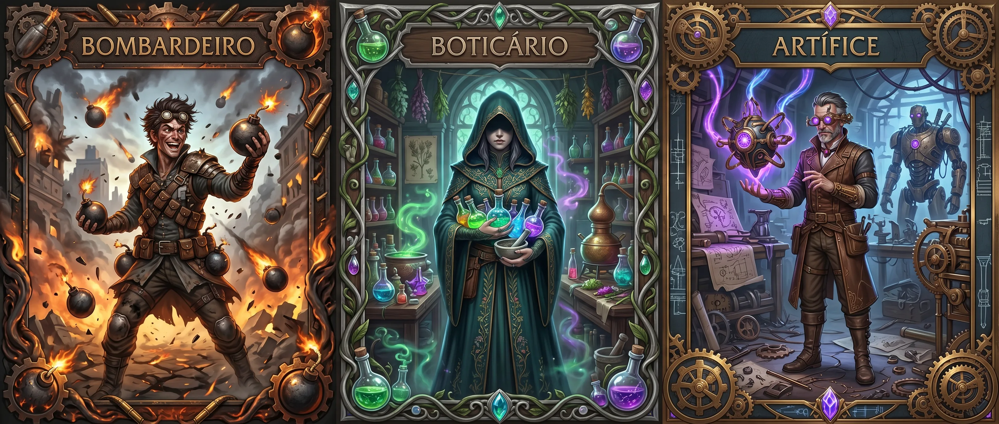

Alquimista

"O mundo é uma oficina. Cada planta esconde uma cura, cada mineral guarda uma explosão, cada substância espera ser transformada. Enquanto outros veem ingredientes, você vê possibilidades infinitas."
Suas mãos carregam cicatrizes de experimentos. Seu avental conta histórias de explosões "controladas". Seu olhar disseca qualquer objeto, calculando o que pode extrair dele. Para você, não existe lixo - apenas matéria-prima esperando propósito.
⚔️ Treinamento
Você começa treinado em: Ofício (Alquimia), Conhecimento
Escolha (1 + Mod. Inteligência) perícias: Ofício (Alquimia), Ofício (Engenharia), Ofício (Ferraria), Místico, Medicina
📊 Status Iniciais
❤️ Saúde
10 + (4 × Nível) + (Mod.CON × Nível)
⚡ Stamina
8 + (6 × Nível) + (Mod.FOR OU Mod.DES × Nível)
✨ Éter
6 + (5 × Nível) + (Mod.INT OU Mod.SAB × Nível)
🛡️ Evasão Ativa
10 + Mod. Destreza + Dado de Defender
🛡️ Evasão Passiva
10 + Mod. Destreza
📈 Progressão
| Nível | Conteúdo |
|---|---|
| 1 | 4 Técnicas |
| 2 | 5 Técnicas, Técnica de Ramo (Tier 1) |
| 3 | 6 Técnicas, 1 Marca |
| 4 | 7 Técnicas, Técnica de Ramo (Tier 1, 2), 2 Marcas |
| 5 | 8 Técnicas, Técnica de Ramo (Tier 1, 2 e 3), 3 Marcas |
🧪 Bolsa de Reagentes
🧪 Sistema de Reagentes
Você possui uma Bolsa de Reagentes que representa seus materiais alquímicos, componentes e suprimentos de crafting.
Reagentes são utilizados pelo alquimista para criar todas suas invenções, sendo elas itens, poções, melhorias e efeitos especiais. Você conhece fórmulas fundamentais da alquimia. Estes itens podem ser criados por qualquer Alquimista, independente do ramo escolhido.
(Nível × 3) + Mod.Inteligência
Você recupera todos os Reagentes em um descanso longo, assumindo acesso a suprimentos básicos ou natureza.
Você pode Buscar Reagentes como sua ação de descanso curto, recuperando 1d4+Nível de reagentes.
📋 Regras de Criação:
- Tempo Padrão: 10 minutos.
- Criação em Lote: Criando com 10 minutos, pode aproveitar e criar múltiplos itens de uma vez.
- Durabilidade: Itens criados duram até o próximo descanso longo, depois perdem seus efeitos ou apresentam falhas.
- Desmanche: Você pode reverter itens produzidos por você, ganhando seus reagentes de volta.
- Teste de Alquimia: Ao criar qualquer item, role um teste de Ofício(Alquimia), ao suceder o CD do item escolhido você o fabrica com sucesso.
Em caso de falha, você perde os reagentes e não cria o item.
⚡ Técnicas
Toda classe possui técnicas, você pode reatribuí-las livremente ao realizar um descanso longo, respeitando o limite de pontos. Você possui 3 Técnicas + Nível.
Alquimia Rápida
Crie um item alquímico em 1 minuto ao invés de 10 minutos.
Produção em Massa
Ao criar um item alquímico, pode gastar 5 de Stamina para criar +1 desse mesmo item sem reagentes adicionais. Máx. itens adicionais = Nível. Itens criados por Produção em Massa não podem ser vendidos pois são de baixa qualidade. ← betovenon.
Alquimia de Combate
Crie um item alquímico rapidamente como 1 ação, porém com custo adicional de +2 Reagentes.
Forçar Invenção
Ao falhar um teste de Ofício(Alquimia), pode rolar novamente, em caso de uma segunda falha sua invenção explode e causa 1d6+Mod. Inteligência de dano Elemental.
Arremessador
Pode rolar Atacar com +1 Treinamento ao arremessar objetos. Adicionalmente, pode arremessar +3 m além do normal.
Economista
Ao criar um item alquímico, você gasta -1 Reagente (mínimo 1).
Conserva
Ao criar um item alquímico, você pode cria-lo de forma que não estrague em descansos longos.
Ferramentas Improvisadas
Você pode manipular fechaduras, desarmar armadilhas e outras ações mecânicas com ferramentas feitas sob necessidade, pode rolar ofício(Alquimia) com +1 Treinamento nesses casos.
Concentrar-se
Ao criar itens alquímico em 10 minutos(Tempo Padrão), a CD de todos os itens reduzem em -2.
Sucateador
Ao Buscar Reagentes como sua ação de descanso curto, recupere 2d4+Nível (Ao invés de 1d4). Adicionalmente, ao finalizar um combate recupere uma quantidade de reagentes = ao seu nível.
Estoque Oculto
Você possui um estoque oculto de reagentes. Você dobra seu mod. Inteligência ao calcular seus reagentes máximos. Ou seja: (Nível * 3) + (2 * Mod. Inteligência)
Resistência Química
Você tem Vantagem em testes de resistência contra venenos, doenças e efeitos ácidos/tóxicos.
Link Remoto
Você pode ativar seus itens alquímicos de até 30 metros de distância deles.
Poções Granada
Suas poções podem ser arremessadas e ao acertar agem como se o alvo tivesse consumido ela.
Óleo Grosso
Seus óleos duram +2 ataques ao serem aplicados em uma arma.
📜 Itens Alquímicos
🧪 Nível 1
CD 8-10| Item | Efeito | Reag. | CD |
|---|---|---|---|
| Ofensivos | |||
| Bomba de Luz | Arremesso 9m. Flash 6m raio. Reflexo ou Cego 1 rodada. | 1 | 8 |
| Pó de Espirro | Arremesso 3m. Fortitude ou Desorientado 1 rodada. | 1 | 8 |
| Fogo Alquímico | Arremesso 9m. 2d6 Fogo em área 1,5m. Reflexo para metade do dano. Queima +1d6 próxima rodada. | 2 | 10 |
| Ácido Corrosivo | Arremesso 9m. 2d8 Ácido, 1 alvo. Ignora 2 de Armadura Específica. | 2 | 10 |
| Frasco Congelante | Arremesso 9m. 2d6 Frio em área 1,5m. Superfície fica Escorregadia 1 min. | 2 | 10 |
| Curativos | |||
| Sal Revigorante | Acorda Inconsciente (não com 0 de Saúde). Remove Atordoado, Adormecido. | 1 | 8 |
| Bálsamo Estabilizador | Criatura Morrendo fica estável e ganha 1 HP após 1 minuto. | 2 | 8 |
| Poção de Cura Menor | Recupera 2d4+Int de Saúde. | 2 | 10 |
| Poção de Vigor | Recupera 1d6 de Stamina. | 2 | 10 |
| Antídoto Simples | Remove Envenenamento de venenos não-mágicos. | 2 | 10 |
| Utilidades | |||
| Bastão de Luz | Luz brilhante 6m + fraca 6m. Dura 4 horas. | 1 | 8 |
| Tinta Invisível | Só aparece com calor ou reagente específico. | 1 | 8 |
| Pó Revelador | Revela magia remanescente utilizada a menos de 1 hora. | 1 | 8 |
| Fumaça Densa | Nuvem 4,5m raio. Obscurecimento total por 1 min. | 2 | 10 |
| Sangue Falso | Pode se fingir de morto. Medicina CD 18 para perceber. Duração 1 hora. | 2 | 10 |
| Catalisador Térmico | Mantém temperatura fixa em recipiente por 24h (0° até 100°). | 1 | 10 |
| Venenos | |||
| Veneno Fraco | Arma: próximos 3 ataques, +1d4 Biológico. Fortitude ou Enjoado 1 min. | 2 | 10 |
🧪 Nível 2
CD 12-14| Item | Efeito | Reag. | CD |
|---|---|---|---|
| Ofensivos | |||
| Bomba de Concussão | Arremesso 9m. 1d6 Contundente em 3m raio. Fortitude ou Surdo 1 min. | 2 | 12 |
| Granada Tóxica | Arremesso 9m. Nuvem 3m por 2 rodadas. 1d8 Veneno/turno + Fortitude ou Enjoado. | 3 | 12 |
| Bola de Eletricidade | Arremesso 9m. 2d6 Elétrico. Armadura metálica: +1d6 e Atordoado 1 rodada (Fort. nega). | 3 | 12 |
| Pó Explosivo | Espalhar em 3m. Detona com fogo/impacto: 3d6 Fogo. Pode ser armadilha. | 3 | 14 |
| Tinta de Cegueira | Arremesso 4,5m. Reflexo ou Cego 2 rodadas. | 2 | 12 |
| Curativos | |||
| Poção de Cura Moderada | Recupera 3d6+Int de Saúde. | 4 | 12 |
| Emplastro de Regeneração | Aplicar em ferimento. Recupera 1d4 Saúde/turno por 3 rodadas. | 3 | 12 |
| Antídoto Universal | Remove Envenenamento, Enjoado ou doença não-mágica. | 3 | 14 |
| Tônico Anti-Exaustão | Remove 1 nível de Exaustão. 1x por descanso longo por criatura. | 3 | 14 |
| Elixires e Óleos | |||
| Elixir de Força | +2 testes de Força como atributo principal, +2 dano corpo a corpo. Duração 10 min. | 3 | 12 |
| Elixir de Agilidade | +2 testes de Destreza como atributo principal, +1,5m Movimento. Duração 10 min. | 3 | 12 |
| Elixir de Resistência | +2 Fortitude, +5 Saúde temporária. Duração 10 min. | 3 | 12 |
| Óleo Flamejante | Arma: próximos 3 ataques +1d6 Fogo. Duração 1 min. | 2 | 12 |
| Óleo Congelante | Arma: próximos 3 ataques +1d6 Frio. Crítico = Lento 1 (máx. 1x/alvo) por 1 rodada. Duração 1 Min. | 2 | 12 |
| Óleo Corrosivo | Arma: próximos 3 ataques ignoram 5 Armadura. Duração 1 min. | 2 | 12 |
| Couro Líquido | +2 Armadura (Ar) Natural. Duração 10 min. | 3 | 14 |
| Utilidades | |||
| Detector de Magia | Frasco brilha azul a menos de 3m de magia/éter. Dura 1 hora. | 2 | 12 |
| Cola Universal | Gruda superfícies (Força CD 20 separa). Pode Enraizar (Fort. nega). | 2 | 12 |
| Solvente Universal | Dissolve cola, resina, adesivo. Remove Enraizado por cola. | 2 | 12 |
| Marcador Rastreável | Líquido invisível. Você detecta a até 100m por 24h. | 2 | 12 |
| Água-Régia | Dissolve metal não-mágico. Abre qualquer fechadura mundana em 3 min. | 3 | 14 |
| Corda Líquida | Enrijece em 6 seg. Vira corda 9m (200kg). Dura 1 hora. | 2 | 12 |
| Espuma Seladora | Sela buracos até 50cm, cria cobertura improvisada. | 2 | 12 |
| Venenos | |||
| Veneno Padrão | 3 ataques. +1d6 Biológico. Fortitude ou Envenenamento 1 min. Duração 1 min. | 3 | 12 |
| Sonífero | Ingerido/inalado. Vontade ou Adormecido 1 hora. Dano acorda. | 3 | 14 |
🧪 Nível 3
CD 16-18| Item | Efeito | Reag. | CD |
|---|---|---|---|
| Ofensivos | |||
| Napalm Alquímico | Arremesso 9m. 3d6 Fogo em área 3m, Reflexo para metade. Queima 2d6/turno por 3 rodadas. Água não apaga. | 4 | 16 |
| Bomba de Fragmentação | Arremesso 9m. 4d6 Perfurante em 4,5m raio. Reflexo para metade. | 4 | 16 |
| Gás Necrótico | Nuvem 6m raio. 2d8 Necrótico/turno. Cura que criaturas na área receberiam é reduzida pela metade. Dura 3 rodadas. | 5 | 16 |
| Bomba de Vácuo | Arremesso 9m. 2d10 Força em 3m. Criaturas são puxadas 3m para o centro. Fortitude nega puxão. | 5 | 18 |
| Carga de Implosão | Colocar em estrutura/objeto. Destrói até 3m³ de material não-mágico. 6d6 em criaturas adjacentes. | 6 | 18 |
| Frasco do Raio | Arremesso 9m. 3d8 Elétrico. Salta para até 2 alvos adicionais em 3m (2d8 cada). | 4 | 16 |
| Curativo | |||
| Poção de Cura Maior | Recupera 4d8+Int de Saúde. | 6 | 16 |
| Elixir de Restauração | Remove Cego, Surdo, Paralisado ou Atordoado. | 5 | 16 |
| Adrenalina de Campo | Criatura inconsciente acorda com metade da Saúde máxima instantaneamente. Recebe Exaustão 1 após 1 hora. | 4 | 16 |
| Poção de Vigor Maior | Recupera 2d6 de Stamina. | 6 | 18 |
| Elixir e Óleo (CD 16-18) | |||
| Elixir do Crescimento | +1 categoria de tamanho. +1d4 dano, +2 For, -2 Des, +1,5m alcance. Duração 1 min. | 5 | 16 |
| Elixir do Encolhimento | -1 categoria de tamanho. +2 Furtividade, +2 Des, -2 For. Passa em frestas. Duração 1 min. | 5 | 16 |
| Extrato de Velocidade | +1 Ação por turno. Duração 3 turnos. Exaustão 1 após efeito. | 6 | 18 |
| Mutagênico Menor | Escolha: +4 For/-2 Int OU +4 Des/-2 For OU +4 Con/-2 Sab. Duração 10 min. | 5 | 16 |
| Elixir da Visão Verdadeira | Vê através de ilusões, escuridão mágica, invisibilidade em 9m. Duração 1 min. | 5 | 18 |
| Elixir Aranha | Escala superfícies como aranha. Mãos livres não necessárias. | 4 | 16 |
| Óleo do Caçador | Arma: +2 Atacar e +2d6 dano contra uma criatura. Duração 1 hora. | 4 | 16 |
| Utilidades | |||
| Elixir das Guelras | Respira debaixo d'água. Duração 30 min. | 4 | 16 |
| Tintura Fantasma | Translúcido, recebe metade de todo dano. +4 Furtividade. Atacar cancela. Duração 1 min. | 4 | 16 |
| Bomba de Éter | Arremesso 9m. Drena 1d6 Éter em 3m. Você recupera metade. | 5 | 18 |
| Elixir das Línguas | Entende e fala qualquer idioma. Duração 1 hora. | 4 | 16 |
| Ácido Dimensional | Corrói barreiras mágicas, campos de força. Anula 1 efeito de barreira. | 6 | 18 |
| Venenos | |||
| Veneno Paralisante | 1 ataque. Fortitude ou Paralisado 2 rodadas. Duração 1 min. | 5 | 16 |
| Soro da Verdade | Ingerido. Vontade ou não pode mentir por 10 min. | 5 | 16 |
| Veneno Hemorrágico | 3 ataques. +2d6 Biológico. Alvo sangra 1d6/turno por 3 rodadas (Medicina estanca). | 5 | 16 |
| Toxina Mental | 1 ataque. Vontade ou Confuso por 1 minuto. | 5 | 18 |
🧪 Nível 4
CD 20-22| Item | Efeito | Reag. | CD |
|---|---|---|---|
| Ofensivos | |||
| Bomba de Plasma | Arremesso 12m. 6d6 Fogo + 6d6 Elétrico em 6m raio. Reflexo para metade. Ignora Resistência a Fogo. | 8 | 20 |
| Praga Alquímica | Arremesso 9m. Fortitude ou 3d8 Biológico em 4,5m. Criaturas afetadas espalham a praga (1d8/turno) ao tocar outros por 1 min. | 8 | 20 |
| Bomba Gravitacional | Arremesso 9m. Cria zona de gravidade intensa 6m raio por 3 rodadas. Criaturas: Movimento reduzido pela metade, -4 Reflexo, voar impossível, 2d6 Contundente/turno. | 10 | 22 |
| Fogo Negro | Arremesso 9m. 4d10 Fogo + 4d10 Necrótico em 3m. Reflexo para metade. Chamas negras. Cura é impossível na área por 1 min. | 10 | 22 |
| Dissolução Total | Aplicar em criatura/objeto. 8d6 Biológico. Ignora toda Armadura. Desintegra matéria morta. | 8 | 20 |
| Curativos | |||
| Poção de Cura Suprema | Recupera 6d8+Int de Saúde + remove 1 condição à escolha. | 10 | 20 |
| Poção de Vigor Suprema | Recupera 3d8 de Stamina + remove todas as condições (Incluindo Mágicas). | 10 | 20 |
| Elixir da Fênix | Criatura morta há menos de 1 minuto ressuscita com 1 HP. | 12 | 22 |
| Regeneração Alquímica | Regenera membro perdido há até 1 hora em 24 horas. Requer repouso. | 8 | 20 |
| Elixir e Óleo | |||
| Mutagênico Maior | +6 em um Atributo, -2 em dois outros. Transformação física visível. Duração 1 Hora. | 8 | 20 |
| Elixir da Perfeição | +2 em Todos os atributos. Duração 10 min. | 10 | 22 |
| Elixir da Forma Bestial | Transforma em besta de CR igual ao seu nível. Mantém mente. Duração 3 turnos. | 8 | 20 |
| Sangue do Dragão | Resistência a todo dano elemental. Sopro 1x (4d6 elemento à escolha, cone 9m). Duração 1 hora. | 12 | 22 |
| Soro da Guerra | +2 Atacar, +2 Defender, +2d6 dano, +3m Movimento, Vantagem em Fortitude. | 8 | 22 |
| Utilidades | |||
| Essência Etérea | Torna-se Incorpóreo por 1 minuto. Atravessa paredes finas. Não pode interagir fisicamente. | 8 | 20 |
| Poção da Invisibilidade | Invisível por 10 min. Atacar, receber dano ou conjurar cancela. | 8 | 20 |
| Bomba Temporal | Área 6m. Criaturas afetadas: Lento 2 (-2 Ação/turno, -6 m movimento, sem reação, -4 Reflexo) por 3 rodadas. Vontade nega. | 12 | 22 |
| Extrato de Clarividência | Vê e ouve local que você conhece a até 1km por 10 min. | 8 | 20 |
| Tinta do Destino | Escreva um evento simples. 50% chance de acontecer nas próximas 24h. Mestre rola os dados. O evento não pode incluir diretamente a morte de uma criatura ou fenômenos/eventos maiores do que a queda de uma árvore média, por exemplo. | 10 | 22 |
| Venenos | |||
| Veneno Letal | 1 ataque. 6d6 Biológico. Fortitude ou +6d6 e Inconsciente. Duração 1 min. | 8 | 20 |
| Veneno da Alma | 1 ataque. 4d6 Necrótico. Vontade ou Éter máximo reduzido pela metade por 24h. Duração 1 min. | 10 | 22 |
| Paralisia Total | 1 ataque. Fortitude ou Paralisado por 1 hora. Duração 1 min. | 8 | 20 |
| Amnésia Líquida | Ingerido. Vontade ou perde memórias das últimas 24h. | 8 | 20 |
🧪 Nível 5
CD 24+| Item | Efeito | Reag. | CD |
|---|---|---|---|
| Lendários | |||
| Elixir da Imortalidade | Não envelhece por 10 anos. Revive 1x se morrer nesse período (1 HP). Requer Coração da Árvore. | 15 | 24 |
| Núcleo Abissal | 10d10 Força em 9m raio. Reflexos ou Morte Instantânea no centro da bomba. Tudo é empurrado para o centro e comprimido. Requer Grilhões do Abismo. | 15 | 24 |
| Soro do Homúnculo | Ao injetar transforma uma criatura em servo alquímico leal pra sempre. Requer Sangue Primordial. | 15 | 24 |
| Lágrima do Tempo | Reverte objeto/criatura/local ao estado de até 1000 anos atrás. 1 uso. Requer Lágrima de Velúria. | 20 | 26 |
🌿 Ramos
Os ramos são caminhos, características únicas do seu personagem. Diferente das técnicas, são irreversíveis.
Marcas de Ramo: Que construiu ao longo da sua vida, moldando sua PERSONALIDADE.
Técnicas de Ramo: Que aprendeu ao longo do seu treinamento definindo seu ESTILO DE AGIR.
É extremamente aceitável que você misture os 3 ramos. Ao longo da criação você escolherá: 3 Marcas e 6 Técnicas de Ramo (3 no Tier 1, ao chegar ao nível 2; 2 no Tier 2, no nível 4; e 1 Ultimate no Tier 3, no nível 5).
⚙️ Ramo do Artificer
Você cruzou a fronteira entre alquimia e místicidade. Onde outros veem limite, você vê oportunidade. Éter não é apenas combustível - é um ingrediente. Suas criações brilham com runas, seus itens pensam, suas invenções desafiam as leis naturais. Você não é apenas um alquimista; é um inventor que dobra a realidade.
💊 Ramo do Boticário
Você é a linha entre a vida e a morte das criaturas. Suas poções fecham feridas que magia não alcança, seus elixires transformam covardes em heróis, seus tônicos enfraquecem gigantes. Você traz esperança - e ocasionalmente, a ruína silenciosa dos inimigos através de debilitações precisas.
🔥 Marcas de Ramo
⚙️ Marcas do Artificer
Pai de Pet
Você tem um certo afeto pelos seus constructos… afeto até demais.
Toda vez que um constructo seu sobreviver a um combate, ganha +1 permanente em Místico.
Ao chegar em +5, essa habilidade fica supérflua
Efeitos e buffs aplicados em você também afetam seu constructo ativo (e vice-versa).
Ao recuperar Stamina ou Éter, o constructo recupera, em vez disso, Saúde.
Sobrecarga
Você sente prazer em tirar o máximo de suas invenções, mesmo quando isso significa sobrecarrega-las.
Ao usar um Cartucho Arcano, você pode gastar +2 Reagentes para conjurar a magia com um dos seguintes efeitos:
- Potência: A magia tem intensidade Forçada automaticamente.
- Modificar: Você pode escolher 1 modulação grátis da escola de magia respectiva da magia.
Ao tirar 1 em testes de místico criando cartuchos, ele explode em você causando 1d6 de Dano de Força e você perde 2d4 de éter.
💣 Marcas do Bombardeiro
Você sente prazer em explodir objetos ou criaturas e vê-los queimar.
Para cada 10 criaturas que você derrotou com itens alquímicos, ganha +1 permanente em Atacar.
Ao chegar em +5, essa habilidade fica supérflua.
Ao derrotar uma criatura com um item alquímico, recupera 1 Reagente.
Você é extremamente metódico e organizado, seus experimentos são friamente calculados.
Uma vez por descanso longo, você pode causar o dano máximo de um Item alquímico que você criou e arremessou.
Itens alquímicos que você cria têm +2 CD nos testes de resistência.
💊 Marcas do Boticário
Curandeiro Incansável
Você tem um senso de dever em curar criaturas.
Para cada 5 Criaturas que você retirou a condição Morrendo, ganha +1 permanente em Medicina.
Ao chegar em +5, essa habilidade fica supérflua.
Ao curar uma criatura que estava com 0 de Saúde e remover a condição morrendo, ela e você também recuperam 2d6 de Stamina.
Mixologista
Você sente prazer em consumir e apreciar substâncias e combinações de substâncias novas.
Você pode combinar 2 poções ou elixires de buff diferentes em um único frasco (custo +2 Reagentes).
O consumidor recebe ambos os efeitos.
Você não pode combinar poções ou elixires iguais.
Aliados que consumirem suas misturas também recuperam 1d4 de Stamina.
⚡ Técnicas de Ramo
Tier 1
Nível 2+⚙️ Artificer
Sintonia Arcana
Passiva- Você se torna Treinado em Místico. Se já for Treinado, se torna Experiente e assim por diante.
- Você pode usar Éter como substituto de Reagentes na proporção 2:1 ao criar itens alquímicos.
- Seu Éter máximo aumenta em +Mod. Inteligência.
Cartucho Arcano
PassivaVocê desenvolveu um método de aprisionar magias em recipientes alquímicos.
- Novo Item Alquímico: Cartucho Arcano
- Tempo de Criação: 10 min, age como craft de item alquímico
- Custo de Criação: (Nível da Magia * 2) Reagentes
- Magias Disponíveis: Você conhece 1 magia + Mod. Inteligência(min. 1) do seu (nível-1) ou menor, após isso você ganha +1 magia por nível.
- CD da criação: Você rola Místico ao criar Cartuchos Arcanos, o CD da criação é 10 + (2 * Nível da Magia).
- Usar Cartucho: Qualquer criatura pode conjurar a magia infundida no cartucho, porém usa seus atributos como base dos CDs e ataques da magia respeitando, também, o custo de ações da magia.
- Limite: Você pode sustentar até (Nível + Mod. Inteligência) de cartuchos ao mesmo tempo. Perdem seus efeitos após um descanso longo.
Constructo Menor
3 Ações, 3 Éter + 4 Reagentes- Você cria um pequeno constructo alquímico (Minúsculo) que dura até o próximo descanso longo ou até ser destruído.
- Estatísticas: 10 Saúde, Evasão 12, Movimento 9m, 2 Ações por turno (pode voar ou escalar).
- O constructo pode:
- Atacar: 1 Ação, 1d20+Mod. Inteligência, Dano: 1d6+Mod. Inteligência
- Carregar até 5 Equipamentos e 20 Bugigangas.
- Espionar e Reportar telepaticamente oque ouve em até 100 m.
- Entregar itens ou poções a aliados como uma reação.
- Detonar: 2 Ações, Explode causando 2d6 de dano Elemental em 3 m de raio.
- Você pode ter apenas 1 constructo por vez.
- Ao ser destruído, você pode saquear 2 reagentes do Constructo Menor.
💣 Bombardeiro
- Você se torna Treinado em Atacar. Se já for Treinado, se torna Experiente e assim por diante.
- Seus itens alquímicos ofensivos (granadas, bombas e arremessáveis) são fabricados com +1d6 de dano.
- Os itens Ofensivos, Óleos e Venenos custam -1 reagentes e tem -2 CD para serem fabricados.
- Ao uso, infunda óleo em uma arma já infundida por um veneno ou vice versa. Você aplica os 2 bônus de dano e efeitos de cada substância ao ataque.
- Você arremessa até 3 itens alquímicos ofensivos simultaneamente, cada item pode atingir um alvo diferente ou o mesmo alvo respeitando seu alcance máximo e rolando Atacar para cada arremesso. Você deve ter os itens preparados de antemão.
💊 Boticário
Anatomista
Passiva- Você se torna Treinado em Medicina. Se já for Treinado, se torna Experiente e assim por diante.
- Poções de cura que você cria curam +2d4 adicional.
- Os itens Curativos e Elixires custam -1 Reagentes e tem -2 CD para serem fabricados.
Elixir Especial
1 Ação, 3 Stamina, 3 Reagentes- Você prepara e administra um elixir especial entre você e seus aliados à distância de toque, pagando 1 reagente por alvo.
- Escolha um dos 3 efeitos que todos recebem por 1 minuto:
- Vigor: +2 em Atacar e +1d6 de dano em Ataques.
- Proteção: +2 em Defender e +2 Armadura(Ar) natural.
- Velocidade: +3m Movimento e não causa ataques de oportunidade.
Tônico Cruel
1 Ação, 3 Stamina- Escolha uma criatura em até 9m. Ela deve fazer um teste de Fortitude:
- Em caso de falha, escolha um efeito que dura por 1 rodada:
- Letargia: -2 em Atacar e Defender.
- Fraqueza: -3m de Movimento e não pode usar Reações.
- Vulnerabilidade: Perde 2 de Armadura e tem Desvantagem em Fortitude.
- Ao falhar contra uma criatura, você não pode usar esta habilidade contra a mesma criatura neste combate.
- Em caso de falha, escolha um efeito que dura por 1 rodada:
Tier 2
Nível 4+⚙️ Artificer
Runas de Proteção
1 Ação, 2 Éter- Você inscreve runas protetoras em uma criatura ou objeto tocado. Dura 1 hora ou até ser consumido.
- A criatura protegida pode ativar as runas como Reação quando sofrer dano:
- Absorção: Reduz o dano em 2d8+Mod. Inteligência
- Retaliação: O atacante sofre 1d8 de dano Místico.
- A criatura protegida pode ativar as runas como Reação quando sofrer dano:
- Você pode manter um total igual ao seu Mod. de Inteligência de Runas ativas simultaneamente.
Constructo de Combate
3 Ações, 5 Éter + 6 Reagentes- Você cria um constructo alquímico aprimorado (Pequeno) que dura até o próximo descanso longo ou até ser destruído.
- Estatísticas: 25 Saúde, Evasão 14, Armadura(Ar) 2, Movimento 9 m, 3 ações por turno (pode voar ou escalar)
- O Constructo pode:
- Atacar: 1 ação, 1d20+Mod. Inteligência + SEU treinamento em Atacar, Dano: 2d6+Mod. Inteligência Elemental(Escolha o tipo ao criar)
- Escudo: 1 ação, um aliado a distância de toque ganha +2 Defender até o inicio do próximo turno do constructo.
- Carregar: Até 10 Equipamentos e 30 Bugigangas.
- Reparar: 1 Ação, cura 1d8 Saúde a sí (Max. 2x por descanso curto)
- Espionar e Reportar telepaticamente o que vê/ouve em até 200 m.
- Detonar: 3 Ações, explode causando 4d6 de dano Elemental em 4,5 m de raio, Reflexo para metade.
- Você só pode ter 1 constructo ativo por vez.
- Ao ser destruído, você pode saquear 3 reagentes do Constructo de Combate.
💣 Bombardeiro
- Seus itens que causam dano Elemental ou Biológico ignoram Ae(Armadura Específica) e Resistências.
- Suas bombas e granadas possuem o alcance de explosão aumentado em 1,5 m.
- Você prepara uma área de 4,5 m de raio em até 9 m com substâncias Elementais ou Biológicas:
- Criaturas que entram ou começam o turno na área sofrem 2d6 de dano (Elemental ou Biológico) a sua escolha.
- Você pode Detonar as substâncias como 1 ação:
- Todas as criaturas na área sofrem 4d6 de dano, Reflexo para metade.
- A zona da morte se dissipa.
- A zona dura 3 Turnos ou até ser detonada e você pode ter apenas 1 Zona da Morte ativa por vez.
💊 Boticário
Transfusão Vital
2 Ações, 3 StaminaVocê aprendeu a manipular a vitalidade entre você e outras criaturas. Ao utilizar, escolha uma das ações a seguir:
- Cura uma criatura em alcance de toque em 2d6+Mod. Int, porém você perde 1d6 de Saúde.
- Você ataca uma criatura com uma seringa de toxinas, causando 2d8+Mod. Int, ao acertar, injeta a seringa de volta em você recuperando Saúde igual ao dano causado.
Gás Especial
2 Ações, 3 Stamina, 4 Reagentes- Você ativa ejetores de gás que inundam um raio de 4,5 m em volta de você de um Gás Especial. Você possui uma mascara que filtra as substâncias danosas e pode prover a qualquer criatura uma copia dessa mascara:
- Criaturas sem Mascara de Filtro:
- Criaturas que começam o turno ou entram na área devem fazer um teste de Fortitude ou ficam Enjoados até saírem da área. Se a criatura já estiver enjoada, ela recebe 2d6+Mod. Int de dano Biológico.
- Criaturas com Mascara de Filtro
- Criaturas que começam o turno ou entram na área recuperam 1d6+Mod. Inteligência de Saúde por Turno enquanto estiverem na área.
- Criaturas sem Mascara de Filtro:
- A nuvem se move com você e você pode manter essa técnica ativa contanto que pague a Stamina novamente toda rodada enquanto o Gás estiver ativo.
Tier 3 — Ultimates
Nível 5 • 1x/Dia⚙️ Titã
- Você invoca um constructo colossal (Grande) que dura até o fim do combate ou até ser destruído.
- Estatísticas: 50 Saúde, Evasão 14, Armadura(Ar) 5, Movimento 6 m, 4 Ações por turno
- O Titã pode:
- Esmagar: 2 Ações, alcance 3m, 4d10 + Mod. Int de dano Contundente. Ao acertar, alvos médios ou menores devem suceder em um teste de Fortitude ou ficam caídos.
- Rajada Arcana: 1 Ação, linha de 12 m, 3d8 de dano Elemental, Reflexo para metade.
- Escudo: 1 Ação, todos os aliados em 4,5 m Ganham +3 defender até o próximo turno do Titã.
- Investida: 3 Ações, avança 12 m em linha reta. Criaturas no caminho que falharem em um teste de Fortitude sofrem 3d10 Contundente, ficam Caídas e podem ser empurradas até 3 m.
💀 O Custo
- Você não pode usar éter para nenhum outro propósito enquanto o Titã existir.
- Se o titã for destruído por um inimigo, você sofre 2d6 de dano Psíquico e ganha Exaustão 1.
- Você libera todo seu arsenal em uma devastação total.
- Escolha um ponto em até 18 m. Uma sequência de explosões atine uma área de 9 m de raio.
- Todas as criaturas na área sofrem 8d6 de dano divididos entre (Escolha 2 tipos: Fogo, Frio, Elétrico, Ácido ou Veneno).
- Reflexos para metade do dano.
- Criaturas que falharem ficam Cegas, Surdas e Caídas por 1 rodada.
- A área fica coberta de substâncias voláteis por 1 minuto com as substâncias utilizadas, criaturas que entram ou começam o turno:
- Fogo: Sofrem 2d6 Fogo e se falharem em Reflexos ficam em chamas.
- Frio: Sofrem 2d6 Frio e se falharem em Movimento ficam Lento.
- Elétrico: Sofrem 2d6 Elétrico e se falharem em Fortitude ficam Atordoados.
- Ácido: Sofrem 2d6 Ácido e se falharem em Fortitude ficam Cegos.
- Veneno: Sofrem 2d6 Veneno e se falharem em Fortitude recebem Envenenamento.
💀 O Custo
- Você perde 2d8+Mod. Int de éter.
- Você deve suceder em um teste de Vontade(CD 20) ou fica paralisado por 1 turno apreciando a explosão.
💊 Metamorfose
- Você administra um mutagênico intenso que transforma radicalmente uma criatura. Escolha um aliado ou inimigo a distância de toque(Pode ser você):
- Aliado, Transformação por 1 Minuto:
- Tamanho aumenta em 2 Categorias.
- +6 Força, +4 Constituição, -2 Inteligência
- +20 Saúde Temporária
- +10 Stamina Temporária
- +2d6 de dano em ataques corpo a corpo.
- Resistência a dano Ordinário.
- Inimigo(Teste de Vontade CD 20+Int), Transformação por 1 Minuto:
- Tamanho diminui em 2 Categorias.
- -6 Força, -4 Constituição, +2 Inteligência.
- -20 Saúde Máxima.
- -2d6 de dano em ataques corpo a corpo.
- Vulnerabilidade a dano Ordinário.
- Sucesso no teste de vontade, nega todos os efeitos anteriores, mas sofre 4d6 de dano Biológico.
- Aliado, Transformação por 1 Minuto:
💀 O Custo
- Ao final da transformação, criaturas aliadas ficam inconsciente e ganha Exaustão 2.